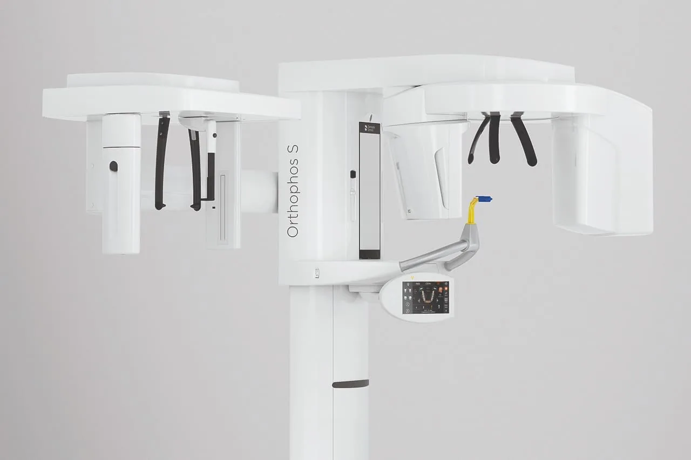
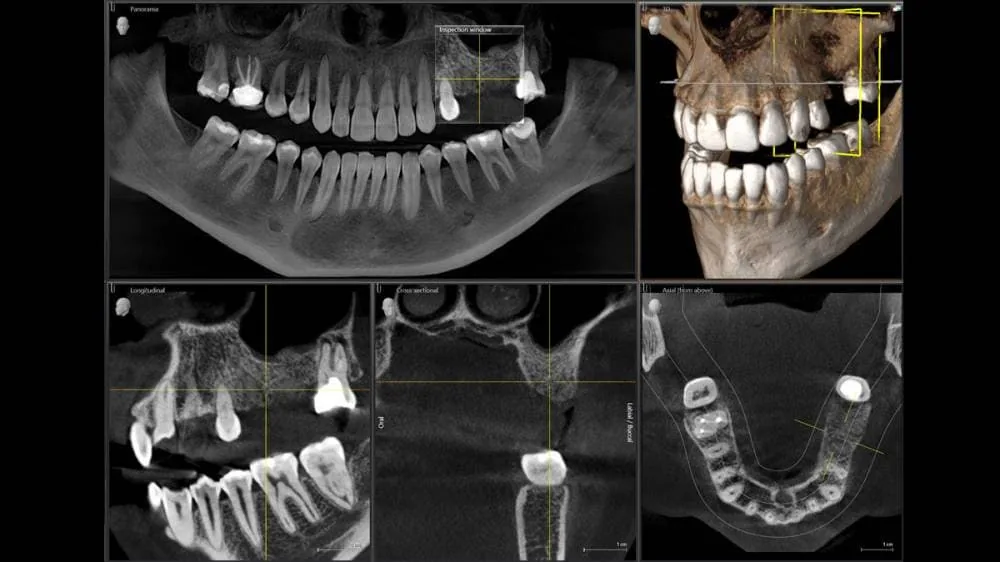

O que é a tomografia computadorizada Cone Beam?
A Tomografia Computadorizada de Feixe Cônico (Cone Beam Computed Tomography — CBCT) é um exame de imagem que produz reconstruções tridimensionais das estruturas maxilofaciais com extrema precisão. É hoje o padrão-ouro para diagnósticos odontológicos avançados.
A Clínica Radix oferece a CBCT com o moderno Orthophos SL 3D, equipamento de última geração da Dentsply Sirona, reconhecido mundialmente por sua excelência em diagnóstico por imagem.
As imagens em 3D permitem mensurações exatas e análise em múltiplos planos, proporcionando muito mais previsibilidade nos tratamentos. Diferente da radiografia 2D tradicional, a tomografia revela detalhes anatômicos que seriam invisíveis em imagens planas.
Diferenciais da Tomografia Cone Beam Radix
Alta definição, baixa radiação
Tecnologia avançada com protocolos de dose reduzida, garantindo segurança ao paciente sem comprometer a acurácia diagnóstica.
Tecnologia Sharp Layer
Tecnologia exclusiva que melhora automaticamente a nitidez, ajustando o foco nas camadas anatômicas de interesse e reduzindo artefatos.
Integração digital completa
Arquivos compatíveis com softwares de planejamento e escaneamentos intraorais, criando guias cirúrgicas e fluxos digitais.
Conforto e rapidez
Exame não invasivo, com aquisição da imagem em poucos segundos e atendimento completo em 10-15 minutos.
Aplicações clínicas da tomografia Cone Beam
A CBCT é essencial para uma ampla gama de aplicações na odontologia moderna:
- Planejamento de implantes dentários: medida exata de altura e espessura óssea, identificação de estruturas anatômicas (canal mandibular, seio maxilar)
- Avaliação de dentes inclusos: sisos, caninos e outros dentes retidos com posição precisa
- Análise de lesões ósseas: cistos, tumores, granulomas e processos infecciosos
- Estudo das articulações temporomandibulares (ATM): diagnóstico de disfunções, desgastes e patologias articulares
- Planejamento cirúrgico: cirurgias ortognáticas, exodontias complexas e enxertos ósseos
- Endodontia avançada: avaliação de canais, fraturas radiculares e lesões periapicais
- Ortodontia: análise de dentes impactados, reabsorções radiculares e planejamento de movimentações complexas
Como é feito o exame de tomografia odontológica
O processo é simples, rápido e totalmente confortável:
- O paciente é acolhido pela equipe da Radix e orientado sobre o procedimento
- Posicionamento em pé no equipamento Orthophos SL 3D, com mordedor e apoios para estabilização
- O tomógrafo gira uma única volta ao redor da cabeça em poucos segundos, capturando centenas de imagens
- O software processa as imagens em uma reconstrução 3D detalhada
- O exame fica pronto e disponibilizado em formato digital no mesmo dia ou em até 24 horas
Por que escolher a Radix para sua tomografia odontológica em Taquaritinga?
A Radix Radiologia Odontológica é referência em exames de imagem para odontologia em Taquaritinga e região. Combinamos equipamentos de última geração com uma equipe altamente qualificada para oferecer diagnósticos precisos e confiáveis.
Nossos exames são disponibilizados 100% em formato digital, com agilidade no envio para o cirurgião-dentista solicitante via plataforma online ou WhatsApp. Atendemos pacientes de Taquaritinga e cidades da região, sem necessidade de pedido para alguns exames.